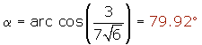
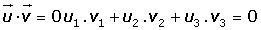

Producto escalar
Producto escalar
El producto escalar de dos vectores es un número real que resulta al multiplicar el producto de sus módulos por el coseno del ángulo que forman.

Expresión analítica del producto escalar

Hallar el producto escalar de dos vectores cuyas coordenadas en una base ortonormal son: (1, 1/2, 3) y (4, −4, 1).
(1, 1/2, 3) · (4, −4, 1) = 1 · 4 + (1/2) · (−4) + 3 · 1 = 4 −2 + 3 = 5
Expresión analítica del módulo de un vector

Hallar el valor del módulo de un vector de coordenadas  = (−3, 2, 5) en una base ortonormal.
= (−3, 2, 5) en una base ortonormal.
Expresión analítica del ángulo de dos vectores

Determinar el ángulo que forman los vectores  = (1, 2, −3) y
= (1, 2, −3) y  = (−2, 4, 1).
= (−2, 4, 1).

Vectores ortogonales
Dos vectores son ortogonales si su producto escalar es 0.

Calcular los valores x e y para que el vector (x, y, 1) sea ortogonal a los vectores (3, 2, 0) y (2, 1, −1).


Propiedades del producto escalar
1. Conmutativa

2. Asociativa

3. Distributiva

4. El producto escalar de un vector no nulo por sí mismo siempre es positivo.

Interpretación geométrica del producto escalar
El producto de dos vectores no nulos es igual al módulo de uno de ellos por la proyección del otro sobre él.


OA' es la proyección del vector  sobre v, que lo denotamos como: .
sobre v, que lo denotamos como: .
Dados los vectores  y
y  hallar:
hallar:
1 Los módulos de  y
y  ·
·
2 El producto escalar de  y
y  ·
·
3 El ángulo que forman.


4 La proyección del vector  sobre
sobre  .
.
5 La proyección del vector  sobre
sobre  .
.
6 El valor de m para que los vectores  y
y  sean ortogonales.
sean ortogonales.

Cosenos directores
En una base ortonormal, se llaman cosenos directores del vector  = (x, y, z), a los cosenos de los ángulos que forma el vector
= (x, y, z), a los cosenos de los ángulos que forma el vector  con los vectores de la base.
con los vectores de la base.


Determinar los cosenos directores del vector (1, 2, −3).